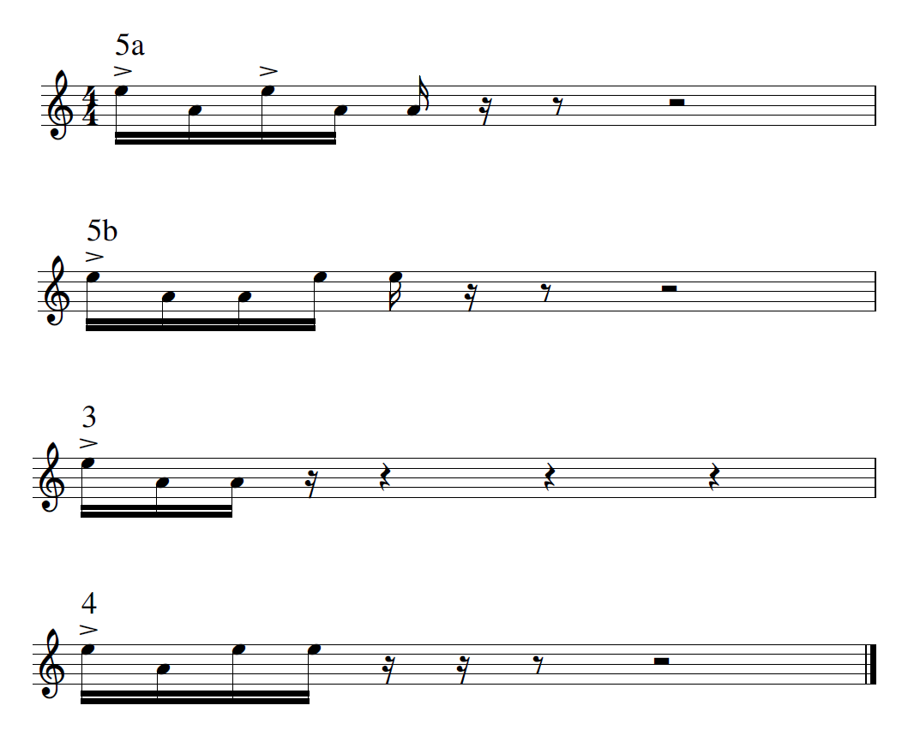
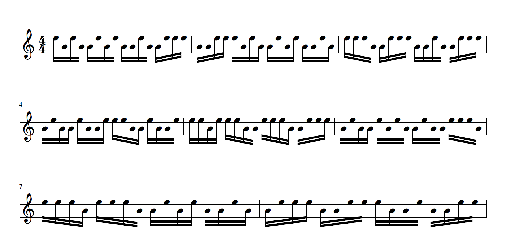
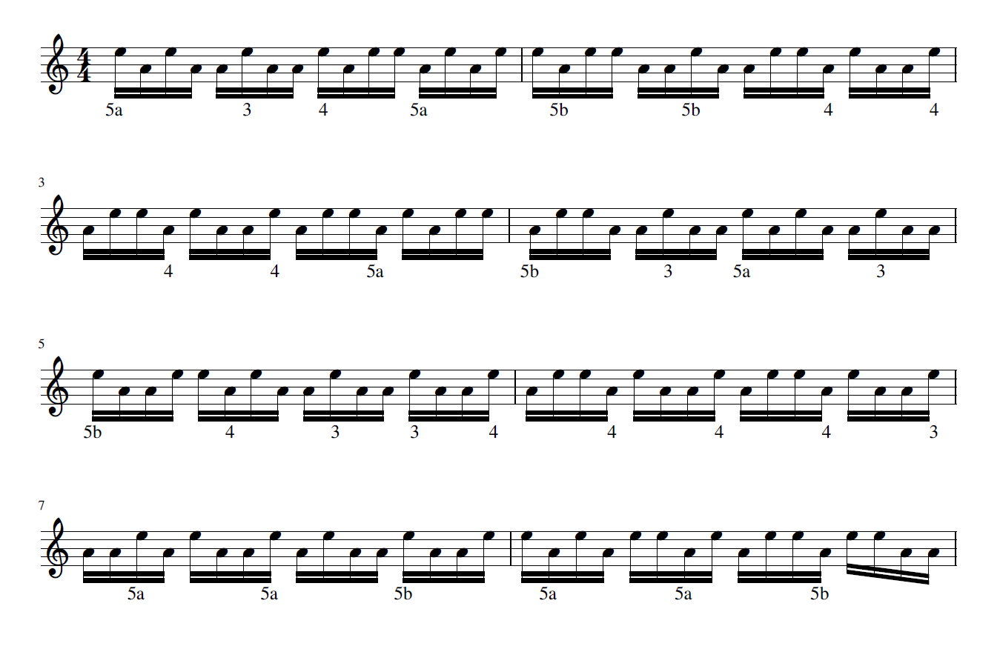

Music Motif Examples
In this page MotifSequenceGenerator is applied in a real world case using the function random_notes_sequence:
#
MusicManipulations.random_notes_sequence — Function.
random_notes_sequence(motifs::Vector{Notes{N}}, q, δq = 0)
Create a random sequence from a pool of notes (motifs) such that it has total length ℓ exactly q - δq ≤ ℓ ≤ q + δq. Notice that q is measured in ticks.
Return the result as a single Notes container, and also return the sequence of motifs used.
This function uses random_sequence from the module MotifSequenceGenerator, adapted to the Notes struct.
Motifs: Basic drum patterns
Let's say that we have some basic drum patterns that we want to be able to combine freely at random combinations. For example,

where the note E means right hand, while A means left hand. These patterns can be easily combined to fill a bar, like for example 5b -> 5b -> 3 -> 3 or 5a -> 4 -> 4 -> 3, etc. They can also be combined to fill two bars and so on. Notice that some sequences, like e.g. the 5a -> 4 -> 4 -> 3, result in alternating hands: each time the sequence is played the hand that "leads" is swapped. This will be important later on.
The goal is to be able to play arbitrary sequences of them for arbitrary lengths. How does one practice that? We will use random_notes_sequence to create longer 8-bar sequences faster with the help of Julia.
Defining the Notes
We first have to define the Notes instances that will correspond to those four basic patterns.
using MusicManipulations # re-exports MIDI tpq = 960 # ticks per quarter note sixt = 240 # duration of sixteenth note left = name_to_pitch("A5") right = name_to_pitch("E6")
88
Reminder: Note(pitch, intensity, start, duration)
motif1 = [ # motif 5a Note(right, 100, 0, sixt), Note(left, 50, sixt, sixt), Note(right, 100, 2sixt, sixt), Note(left, 50, 3sixt, sixt), Note(left, 50, 4sixt, sixt) ] motif2 = [ # motif 5b Note(right, 100, 0, sixt), Note(left, 50, sixt, sixt), Note(left, 50, 2sixt, sixt), Note(right, 50, 3sixt, sixt), Note(right, 50, 4sixt, sixt) ] motif3 = [ # motif 3 Note(right, 100, 0, sixt), Note(left, 50, sixt, sixt), Note(left, 50, 2sixt, sixt), ] motif4 = [ # motif 4 Note(right, 100, 0, sixt), Note(left, 50, sixt, sixt), Note(right, 50, 2sixt, sixt), Note(right, 50, 3sixt, sixt), ] motifs = Notes.([motif1, motif2, motif3, motif4], tpq)
4-element Array{Notes{Note},1}:
Notes{Note} with 5 notes
Notes{Note} with 5 notes
Notes{Note} with 3 notes
Notes{Note} with 4 notes
Now motifs stands for a pool of note sequences we can draw random samples from. Let's generate sequences that are 8-bars long (i.e. 32 quarter notes)
q = tpq*32 notes, seq = random_notes_sequence(motifs, q) notes
128 Notes with tpq=960 Note E6 | vel = 100 | pos = 0, dur = 240 Note A5 | vel = 50 | pos = 240, dur = 240 Note E6 | vel = 50 | pos = 480, dur = 240 Note E6 | vel = 50 | pos = 720, dur = 240 Note E6 | vel = 100 | pos = 960, dur = 240 Note A5 | vel = 50 | pos = 1200, dur = 240 Note A5 | vel = 50 | pos = 1440, dur = 240 ⋮ Note A5 | vel = 50 | pos = 29040, dur = 240 Note A5 | vel = 50 | pos = 29280, dur = 240 Note E6 | vel = 50 | pos = 29520, dur = 240 Note E6 | vel = 50 | pos = 29760, dur = 240 Note E6 | vel = 100 | pos = 30000, dur = 240 Note A5 | vel = 50 | pos = 30240, dur = 240 Note A5 | vel = 50 | pos = 30480, dur = 240
and now we can write these to a MIDI file simply by doing writeMIDIFile("drums_patterns.mid", notes) if we want to. We can also use MuseScore, to visualize and print the result. The function musescore provides this interface.
musescore("drums_patterns.png", notes)

this is a pre-made figure - your random sequence will probably differ
This worked nicely, but there is a problem: The sequence does not respect the fact that some specific patterns (5b and 4) swap the leading hand. This is what we tackle in the next section.
Adding alternating hands and Lyrics
Notice that random_note_sequence also returns the indices of the motifs that were used to create the sequence:
seq
31-element Array{Int64,1}:
4
2
2
1
2
1
1
2
3
3
⋮
1
3
4
4
4
4
4
2
3
We can use this information to put the correct "stickings". To alternate hands we simply need to replace the necessary E notes with A and vice versa. Let's define some "meta-data" like structures
accent1 = ("5a", false) accent2 = ("5b", true) accent3 = ("3", false) accent4 = ("4", true) accents = [accent1, accent2, accent3, accent4]
4-element Array{Tuple{String,Bool},1}:
("5a", false)
("5b", true)
("3", false)
("4", true)
The first entry of each tuple is simply the name of the pattern which we will also show in our music score as "lyrics". The second entry of the tuple simply denotes whether the pattern swaps the leading hand.
The function that will "inverse" a note sticking is:
inverse!(n::Note) = (n.pitch = (n.pitch == left ? right : left));
The function that will "count" how long is each pattern, so that we put the lyrics on the correct positions in the score, will be:
note_length(s::String) = parse(Int, s[1]);
(remember: sixt is the duration of one sixteenth note). We now initialize an empty MIDITrack and add all events to it!
track = MIDITrack() ℓ = 0 right_leads = true for i in 1:length(seq) s = accents[seq[i]][1] le = textevent(:lyric, s) addevent!(track, ℓ*sixt, le) if !right_leads # Invert notes for j in ℓ+1:ℓ+note_length(s) inverse!(notes[j]) end end global ℓ += note_length(s) change = accents[seq[i]][2] global right_leads = xor(right_leads, change) end addnotes!(track, notes) notes
128 Notes with tpq=960 Note E6 | vel = 100 | pos = 0, dur = 240 Note A5 | vel = 50 | pos = 240, dur = 240 Note E6 | vel = 50 | pos = 480, dur = 240 Note E6 | vel = 50 | pos = 720, dur = 240 Note A5 | vel = 100 | pos = 960, dur = 240 Note E6 | vel = 50 | pos = 1200, dur = 240 Note E6 | vel = 50 | pos = 1440, dur = 240 ⋮ Note A5 | vel = 50 | pos = 29040, dur = 240 Note A5 | vel = 50 | pos = 29280, dur = 240 Note E6 | vel = 50 | pos = 29520, dur = 240 Note E6 | vel = 50 | pos = 29760, dur = 240 Note A5 | vel = 100 | pos = 30000, dur = 240 Note E6 | vel = 50 | pos = 30240, dur = 240 Note E6 | vel = 50 | pos = 30480, dur = 240
Finally, to visualize, we use musescore again, using a midi file as an input
musescore("drums_patterns_with_names.png", MIDIFile(1, 960, [track]))

Isn't it cool that even the lyrics text was displayed so seamlessly?